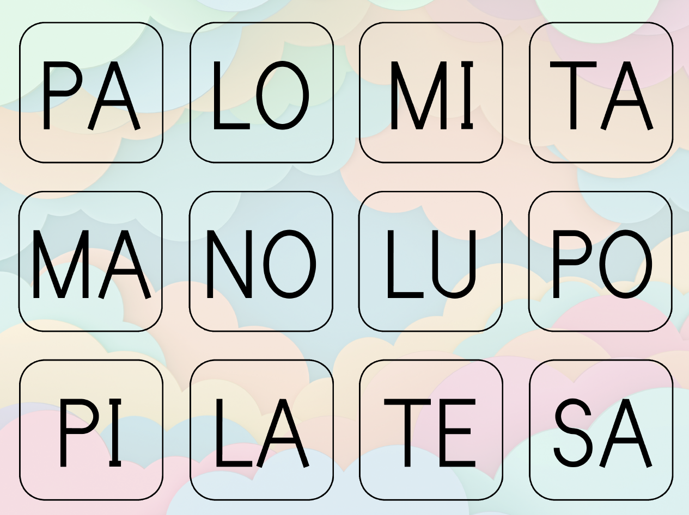
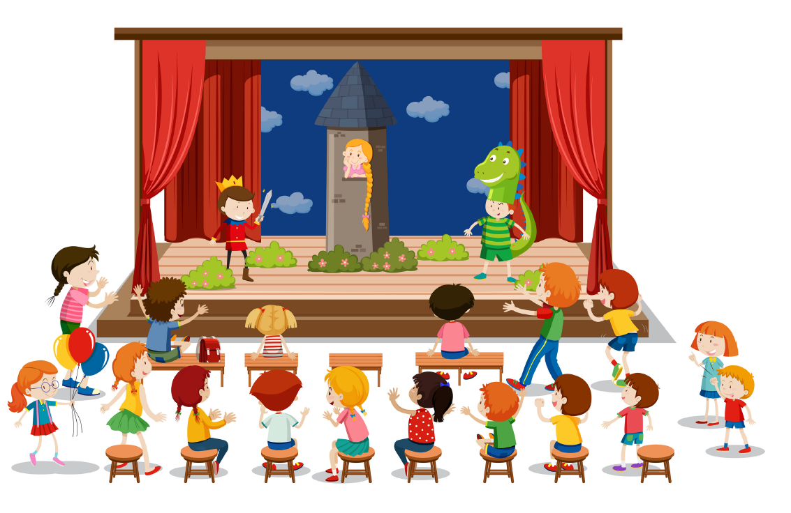

El Jardí de les Vocals
Aprèn les lletres mentre jugues amb el teu personatge. Un fons perfecte per començar.
Veure ActivitatUna experiència d'aprenentatge única on la programació es toca, se sent i es viu. Benvinguts a TactileJr, on la inclusió és la nostra base.
Usa aquests materials com a fons per al teu taulell i comença a programar!
Aprèn les lletres mentre jugues amb el teu personatge. Un fons perfecte per començar.
Veure Activitat
Viu el conte clàssic de forma tàctil. Ajuda els porquets a construir les seves cases!
Veure Activitat
Divideix les paraules i salta de síl·laba en síl·laba per tot el taulell.
Veure Activitat
Programa els teus hàbits diaris: des de llevar-te fins a anar a dormir!
Veure Activitat
Viu la rosa i el drac de forma tàctil. Una aventura llegendària per a tothom!
Veure ActivitatTria una aventura i comença a crear amb TactileJr

Dóna vida a la teva imaginació programant un personatge dins d'una escena plena de textures.
Busca tresors naturals i ajuda el teu personatge a trobar-los tots.

Tu ets el propi robot! Mou-te per la sala seguint les ordres dels teus amics.

Tanca els ulls i descobreix el món secret de les textures i les formes.

Converteix-te en un creador de jocs i reptes divertits per als teus companys.